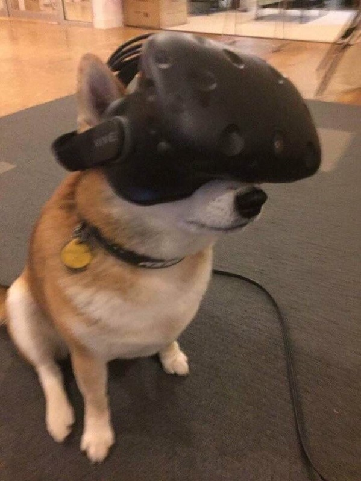

Michael Portis is a Sophomore CS Major at WMU. He greatly enjoys virtual reality and would, potentially, like to use his major to help develop software for VR. This summer (when there will finally be some free time) he would like to learn more about game design. Along with this, he will be interning about Bosch LLC for the second year.
